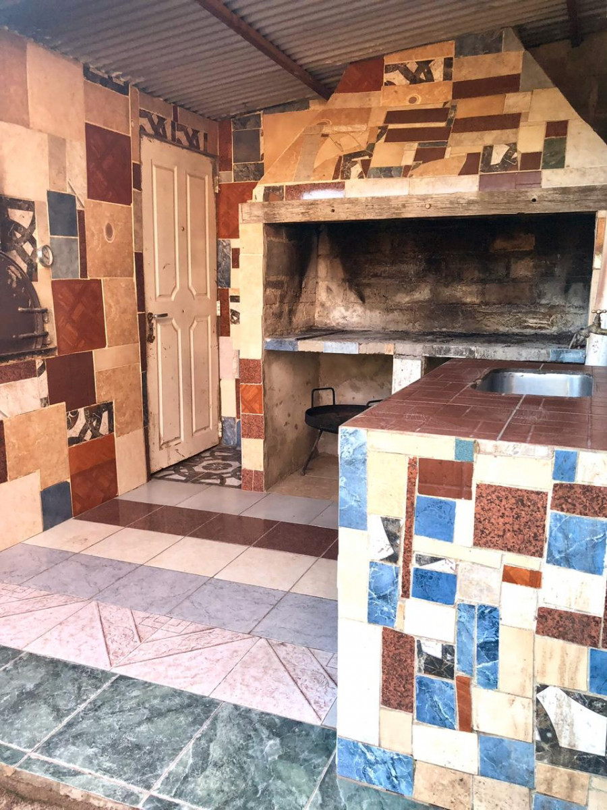

Alojamientos

Seccion de Alojamientos
Cabaña el Oasis



De Sergio Bonvehi.
Dirección General Artiga y Monte Video.
Barrió San Martin. Quilino.
Cabañas: Para 6 y 5 Personas, totalmente equipadas con vajillas, heladeras, cocina y microondas, tv por
cable, aire acondicionado, agua caliente, asador, cochera con patio parquizado.
Salón para eventos y fiestas: con vajillas completa, cocina con heladeras, frízer, cafeteras, agua caliente,
mantelería, cubre sillas c/ moños,
Decoración de salón con telas, tachos leed, laser, puf, mesa y sillas p/ 200 personas, quincho con hornos y
asador, parque cerrado
Telefono:(3521) 407880
Telefono:(3521) 400830
Cabaña "Los chañaritos”


De Marta y Nélida Quintero.
Dirección: Leopoldo Lugones. Villa Quilino.
Cuenta con tres cabañas.
Baños privados, calefón a leña y eléctricos, ropa blanca, ventilador, directv prepago, cocina equipada,
asadores, mesas y sillas exteriores, cocheras y pileta.
Cabañas de 5 y 8 personas con camas matrimoniales e individuales.
También con 3 dormitorios con galerías. Ropa blanca, ventiladores, camas matrimoniales e individuales para 4
a 8 personas, baños y cocina para compartir.
Telefono:(3521) 5721046
Telefono:(3521) 75493676
Posada la Estrella Azul


Posada “La estrella Azul”
De Jorge Quinteros.
Dirección: Ruta Nacional n 60 km 851.
Cuenta con doces habitaciones.
Baños privados, tv, aire acondicionado, ventilador, calefacción, cochera cubierta, mesas y sillas,
heladeras, camas matrimoniales e individuales.
Telefono:(3521) 498380
Telefono:(3521) 438397